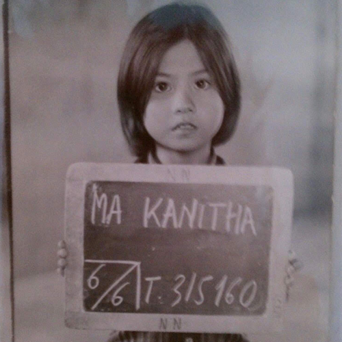
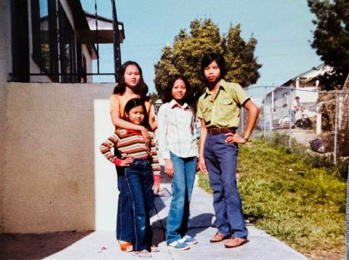

Experiences in Displacement
My mother was born in 1973 in the city of Battambang, Cambodia, the fifth daughter of a French and mathematics professor and a garment worker. She had begun her life in a hard labor camp not long after she had turned two years old, her elder sisters splitting their time between nurturing her and digging mass graves. Shortly after Pol Pot was driven out of the country by Vietnamese forces, my mother and her family escaped through the jungle to the border of Thailand, narrowly avoiding landmines and gunfire in the process. They found refuge in a refugee camp run by missionaries, and by 1981, they had been sponsored to relocate to San Diego, California. My mother had turned ten years old.

My mother, upon admittance to Koa I-Dang, Thailand, 1978.
What does it mean to be an immigrant? To be displaced from your country of birth, a country who had slaughtered four million of its own people in the span of four years, only to have to start over in a country who's military had dropped 214 tons of bombs on your homeland barely a decade prior? To know nothing by fear and uncertainty for the first decade of your life, and to struggle again poverty and societal bigotry for decades after? The immigrant experience is anything but black and white. The immigrant experience is terror, but the immigrant experience is also hope. Today, there is little room for the diverse narratives of such experiences. I believe it is essential for the children of immigrants to continue this legacy and keep immigrant voices in the essential narrative of this country. ■

My mother, two of her sisters, and a family friend, San Diego, 1981.